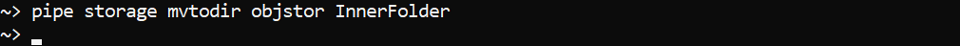
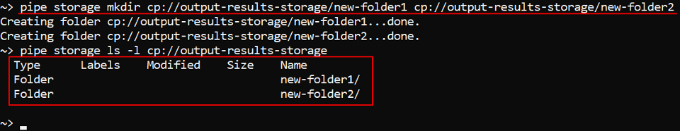
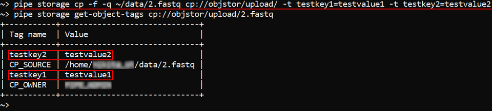
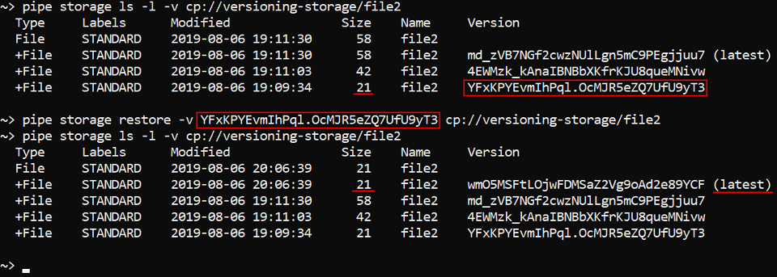
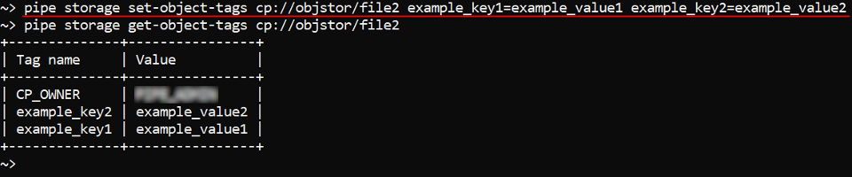
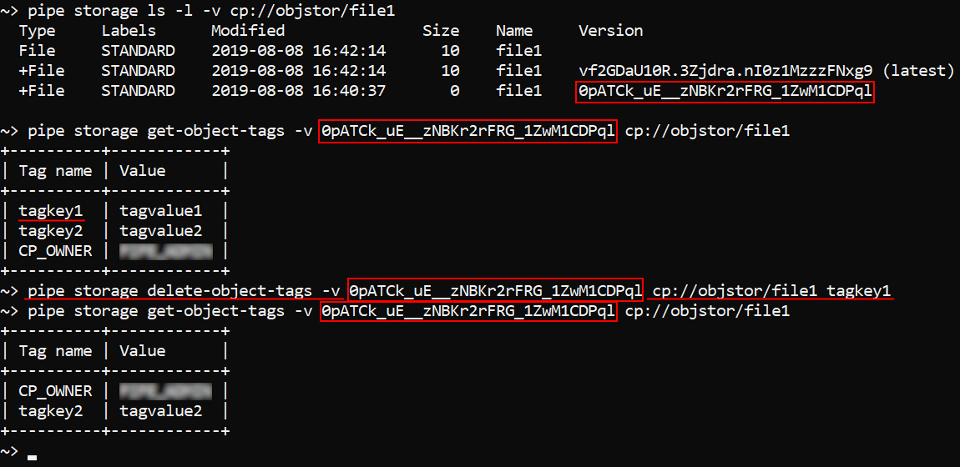

14.3. Manage Storage via CLI
- Create a datastorage
- List storages/storage content
- Edit a datastorage
- Delete a datastorage
- Create a folder in a storage
- Upload and download data
- Control File versions
- Manage datastorage objects attributes
Cloud Pipeline CLI has to be installed. See 14.1. Install and setup CLI.
To perform different operations with object storages the command set pipe storage is used.
Create a datastorage
The command to create an object storage:
pipe storage create [OPTIONS]
| Options | Description |
|---|---|
| Required options | |
-n / --name |
Alias of the new object storage |
-p / --path |
Datastorage path |
| Non-required options | |
-d / --description |
Description of the object storage |
-sts / --short_term_storage |
Number of days for storing data in the short term storage. Note: This option is available not for all Cloud Providers |
-lts / --long_term_storage |
Number of days for storing data in the long term storage. Note: This option is available not for all Cloud Providers |
-v / --versioning |
Enable versioning for this object storage. Note: This option is available not for all Cloud Providers |
-b / --backup_duration |
Number of days for storing backups of the storage. Note: This option is available not for all Cloud Providers |
-t / --type |
Type of the Cloud for the object storage. Depends on the Cloud Provider. Possible values - S3 (for AWS), AZ (for MS Azure), GS (for GCP) and NFS (for FS mounts) |
-f / --parent_folder |
Name/ID of the folder which will contain the object storage. Default value - library root folder |
-c / --on_cloud |
To create datastorage on the Cloud. This flag shall be specified, only if a new datastorage is being created. If user want to add an existing storage this flag should not be specified |
-r / --region_id |
Cloud region ID where storage shall be created |
Note: there is not necessary to set all options while input that command. If some options are not set - user shall be prompted for them in an interactive manner, if they will not be set in an interactive manner, default values will be used.
In the example below the object storage output_results for the new datastorage output_results_storage will be created in the folder with ID 297 with the following options: STS duration - 20 days, LTS duration - 45 days, backup duration - 30 days.
pipe storage create -n output-results -p output-results-storage -c -sts 20 -lts 45 -b 30 -f 297

-c flag was specify to create a storage in the Cloud.
As you can see - Description, Type of the Cloud and Cloud Region ID fields were left empty. So, values for these options will be set as default.
List storages/storage content
The command to view the full storage list of the current platform deployment:
pipe storage ls [OPTIONS]
| Options | Description |
|---|---|
| Non-required options | |
-l / --show_details |
Show details |
Perform the following command to view full storage list and to check that the object storage from the example above was created:
pipe storage ls -l
The command to view the content of the datastorage:
pipe storage ls [OPTIONS] <Path>
Path - defines a full path to the datastorage. Path value must begin from the Cloud prefix (S3 (for AWS), AZ (for MS Azure), GS (for GCP) or common CP(instead of described ones, regardless of Provider)).
| Options | Description |
|---|---|
| Non-required options | |
-l / --show_details |
Show details |
-v / --show_versions |
Show object versions. Only for storages with enabled versioning |
-r / --recursive |
Recursive listing |
-p / --page |
Maximum number of records to show |
-a / --all |
Show all results at once ignoring page settings |
Example of the detailed datastorage content view:
pipe storage ls --show_details s3://objstor
Or you can use the common CP prefix instead of S3:
pipe storage ls --show_details cp://objstor
Result will be the same:
Edit a datastorage
Change backup duration, STS/LTS duration, versioning
The Command to change backup duration, select STS/LTS duration or enable versioning:
pipe storage policy [OPTIONS]
| Options | Description |
|---|---|
| Required options | |
-n / --name |
Alias/path of the storage to update the policy. Specified without Cloud prefix |
| Non-required options | |
-sts / --short_term_storage |
Number of days for storing data in the short term storage. Note: This option is available not for all Cloud Providers |
-lts / --long_term_storage |
Number of days for storing data in the long term storage. Note: This option is available not for all Cloud Providers |
-v / --versioning |
Enable versioning for this object storage. Note: This option is available not for all Cloud Providers |
-b / --backup_duration |
Number of days for storing backups of the storage. Note: This option is available not for all Cloud Providers |
In the example below backup duration is set to 25 days, STS and LTS durations are set to 50 days and 100 days respectively for the datastorage objstor. Also, we enable versioning for that datastorage:
pipe storage policy -n objstor -b 25 -sts 50 -lts 100 -v

Note: there is not necessary to set all options while input that command. If some options are not set - user shall be prompted for them in an interactive manner, if they will not be set in an interactive manner, default values will be used.
You can check via the GUI that parameters were changed:

Change a parent folder for a datastorage
The command to move a datastorage to a new parent folder:
pipe storage mvtodir <Storage> <Directory>
Directory - name of the folder to which the object storage will be moved.
Storage - alias/path of the storage to delete. Specified without Cloud prefix.
In the example below we will move the storage objstor to the folder "InnerFolder":
pipe storage mvtodir objstor InnerFolder

Delete a datastorage
The command to delete an object storage:
pipe storage delete [OPTIONS]
| Options | Description |
|---|---|
| Required options | |
-n / --name |
Alias/path of the storage to delete. Specified without Cloud prefix |
| Non-required options | |
-c / --on_cloud |
To delete datastorage from a Cloud. If this option isn't set, datastorage will just become unregistered |
-y / --yes |
Do not ask confirmation |
In the example below we will delete the output-results-storage without asking confirmation:
pipe storage delete -n output-results-storage -y

As the command above was performed withoud --on_cloud option, output-results-storage wasn't deleted from a Cloud actually and it might be added again to the Cloud Pipeline platform via described storage create command:

Create a folder in a storage
The command to create a folder in a storage:
pipe storage mkdir <List of FOLDERs>
List of FOLDERs - defines a list of the folders paths. Each path in the list shall be a full path to a new folder in the specific datastorage. Path value must begin from the Cloud prefix (S3 (for AWS), AZ (for MS Azure), GS (for GCP) or common CP(instead of described ones, regardless of Provider)).
In the example below we will create folders "new-folder1", "new-folder2" in the storage output-results-storage and then will check that they're exist via described storage ls command:
pipe storage mkdir cp://output-results-storage/new-folder1 cp://output-results-storage/new-folder2

Upload and download data
There are two commands to upload/download data:
pipe storage cp [OPTIONS] <Source> <Destination>
pipe storage mv [OPTIONS] <Source> <Destination>
By cp command you can copy files from one datastorage to another one or between local filesystem and a datastorage (in both directions).
By mv command you can move files from one datastorage to another one or between local filesystem and a datastorage (in both directions).
Source - defines a path (in the local filesystem or datastorage) to the object to be copied/moved. Destination - defines a path (in the local filesystem or datastorage) to the object where source object will be copied/moved.
| Options | Description |
|---|---|
| Non-required options | |
-r / --recursive |
Recursive source scan. This option is not needed when you copy/move a single file |
-f / --force |
Rewrite files in destination |
-e / --exclude |
Exclude all files matching this pattern from processing |
-i / --include |
Include only files matching this pattern into processing |
-q / --quiet |
Quiet mode |
-s / --skip-existing |
Skip files existing in destination, if they have size matching source |
-t / --tags |
Set object attributes during processing. attributes can be specified as single KEY=VALUE pair or a list of them. If this option specified all existent attributes will be overwritten |
-l / --file-list |
Path to the file with file paths that should be copied/moved. This file should be tab delimited and consist of two columns: relative path to file and size |
-sl / --symlinks [follow|filter|skip] |
Describe symlinks processing strategy for local sources. Possible values: follow - follow symlinks (default); skip - do not follow symlinks; filter - follow symlinks but check for cyclic links |
In the example below we will upload files from the local filesystem to the storage objstor into the folder "upload":
pipe storage cp ~/data cp://objstor/upload --recursive
Application will start uploading files and print progress. You can view it:
After uploading is complete, check that they're uploaded - via described storage ls command:

In the example below we will upload the file "2.fastq" from the local filesystem in the quiet mode, rewrite it to the storage objstor into the folder "upload" and set two attributes on it:
storage cp -f -q ~/data/2.fastq cp://objstor/upload/ -t testkey1=testvalue1 -t testkey2=testvalue2
After that, we will check attributes of the uploaded file - via storage get-object-tags command:

Note: Files uploaded via CLI will have the following attributes and values automatically set:
- CP_OWNER. The value of the attribute will be set as a user ID.
- CP_SOURCE. The value of the attribute will be set as a local path used to upload.
The example demonstrates automatic file tagging after data uploading:
The example below demonstrates how to download files from the datastorage folder to the local filesystem. Also we will not download files which names starts from 1.:
pipe storage cp -r -e 1.* cp://objstor/upload/ ~/data/input/
Control File versions
Note: This feature is available not for all Cloud Providers. Currently, it is supported by AWS and GCP.
Show files versions
To view file versions for the storage with enabled versioning use the storage ls command with the both specified -l and -v options, e.g.:
pipe storage ls -l -v cp://versioning-storage

As you can see - "file1" and "file3" each has 1 version. "file2" has 3 versions. "file4" has 2 verions.
To view versions of a specific file specify its full path, e.g.:
pipe storage ls -l -v cp://versioning-storage/file4

Restore files
The command to restore a previous version of a file:
pipe storage restore [OPTIONS] <Path>
Path - defines a full path to the file in a datastorage.
| Options | Description |
|---|---|
| Non-required options | |
-v / --version |
To restore a specified version |
By this command you can restore file version in a datastorage. If version is not specified via -v option it will try to restore the latest non-deleted version. Otherwise a specified version will be restored.
The example below shows how to set one of the previous versions for the "file2" as the latest:
pipe storage restore -v <Version> cp://versioning-storage/file2

Note: When a specified version of the "file2" is restored, a copy of that version is created to become the latest version of the file.
You can restore a deleted file without specifying a version. It works only for files with a Delete marker as the latest version ("file4" in the example below). In such case the command will be, e.g.:
pipe storage restore cp://versioning-storage/file4

Note: Before we restored the file "file4" its latest version was a Delete marker. After restoration this marker disappeared.
Delete an object from a datastorage
The command to delete an object from a storage:
pipe storage rm [OPTIONS] <Path>
Path - defines a full path to the object in a datastorage.
| Options | Description |
|---|---|
| Non-required options | |
-y / --yes |
Do not ask confirmation |
-v / --version |
Delete a specified version of an object |
-d / --hard-delete |
Completely delete an object from a storage |
-r / --recursive |
Recursive deletion (required for deleting folders) |
-e / --exclude |
Exclude all files matching this pattern from processing |
-i / --include |
Include only files matching this pattern into processing |
The example below demonstrates how to delete a file from the storage objstor:
pipe storage rm cp://objstor/simplefile

If this command is performed without options over the object from the storage with enabled versioning, that object will not be removed completely, it will remain in a datastorage and get a Delete marker. Such objects can be restored via storage restore command.
In the example below we set a Delete marker to the file "file1":

Note: the latest version of the file "file1" is marked with Delete marker now.
To completely delete an object from a datastorage use -d option. In the example below we will completely delete the file "file2" from the storage with enabled versioning without asking confirmation:
pipe storage rm -y -d cp://versioning-storage/file2

To delete a specific version of an object use -voption. In the example below we will delete one of the versions of the file "file4" from the storage with enabled versioning without asking confirmation:
pipe storage rm -y -v <Version> cp://versioning-storage/file4
In the example below we will completely delete files from the folder "initial-data" - for that we will use --recursive option. But we will delete only files whose names contain symbol 3 - for that we will use --include option:
pipe storage rm --yes --hard-delete --include *3* --recursive cp://versioning-storage/initial-data/
Manage datastorage objects attributes
This section is about attribute management of the inner datastorages files via CLI.
To manage attributes of other Cloud Pipeline objects - see 14.2. View and manage Attributes via CLI.
Get object attributes
The command to list attributes of a specific file in a datastorage:
pipe storage get-object-tags [OPTIONS] <Path>
Path - defines a full path to a file in a datastorage. Path value must begin from the Cloud prefix (S3 (for AWS), AZ (for MS Azure), GS (for GCP) or common CP(instead of described ones, regardless of Provider)).
| Options | Description |
|---|---|
| Non-required options | |
-v / --version |
To get attributes for a specified file version. If option is not set, but datastorage versioning is enabled - processing will be performed for the latest file version |
In the example below we will get attributes for the file "file1" from the datastorage objstor:
pipe storage get-object-tags cp://objstor/file1

In the example below we will get attributes for the previous version of the file "file1" from the datastorage objstor:
pipe storage get-object-tags -v <Version> cp://objstor/file1

Set object attributes
The command to set attributes for a specific file in a datastorage:
pipe storage set-object-tags [OPTIONS] <Path> <List of KEY=VALUE>
- Path - defines a full path to a file in a datastorage. Path value must begin from the Cloud prefix (
S3(for AWS),AZ(for MS Azure),GS(for GCP) or commonCP(instead of described ones, regardless of Provider)). - List of KEY=VALUE - list of attributes to set. Can be specified as a single
KEY=VALUEpair or a list of them.
| Options | Description |
|---|---|
| Non-required options | |
-v / --version |
To set attributes for a specified file version. If option is not set, but datastorage versioning is enabled - processing will be performed for the latest file version |
Note: if a specific attribute key already exists for a file, it will be overwritten.
In the example below we will set attributes for the file "file2" from the datastorage objstor and then check that attributes are set by the storage get-object-tags command:
pipe storage set-object-tags cp://objstor/file2 example_key1=example_value1 example_key2=example_value2

Delete object attributes
The command to delete attributes for a specific file in a datastorage:
pipe storage delete-object-tags [OPTIONS] <Path> <List of KEYs>
- Path - defines a full path to a file in a datastorage. Path value must begin from the Cloud prefix (
S3(for AWS),AZ(for MS Azure),GS(for GCP) or commonCP(instead of described ones, regardless of Provider)). - List of KEYs - list of attribute keys to delete.
| Options | Description |
|---|---|
| Non-required options | |
-v / --version |
To delete attributes for a specified file version. If option is not set, but datastorage versioning is enabled - processing will be performed for the latest file version |
In the example below we will delete attribute tagkey1 for the previous version of the file "file1" from the datastorage objstor:
pipe storage delete-object-tags -v <Version> cp://objstor/file1 tagkey1
